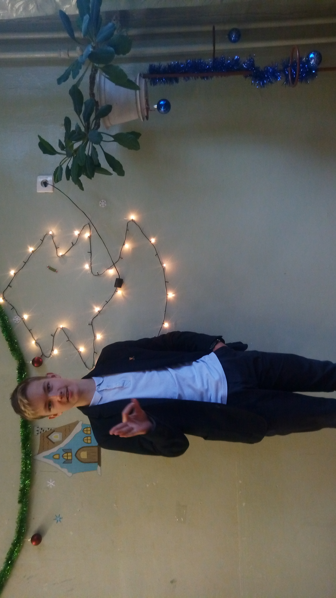
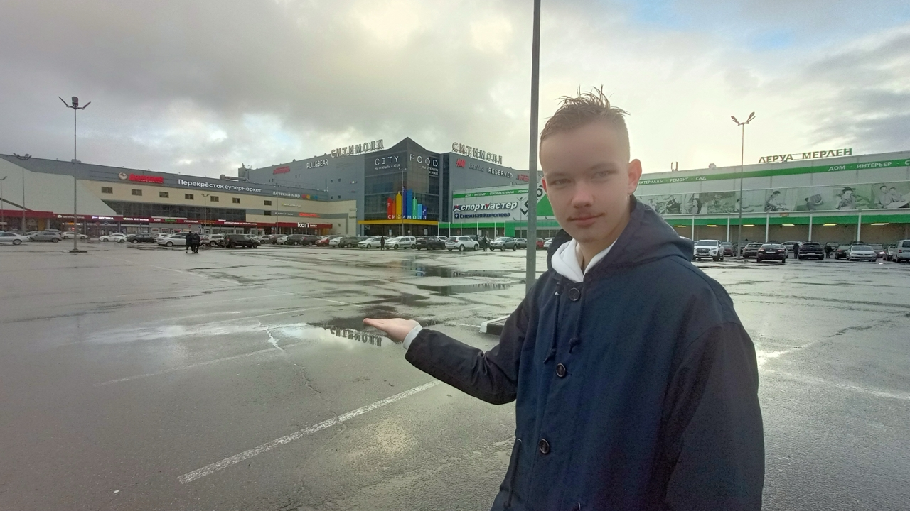
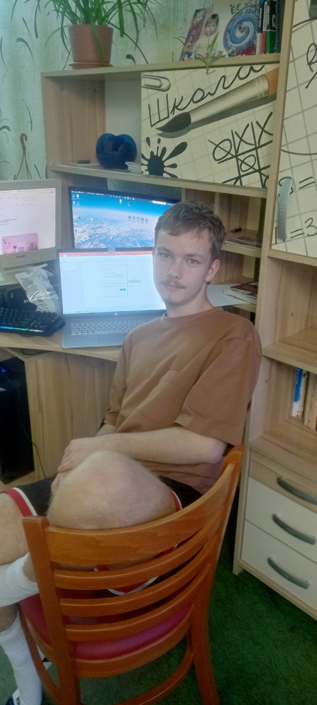
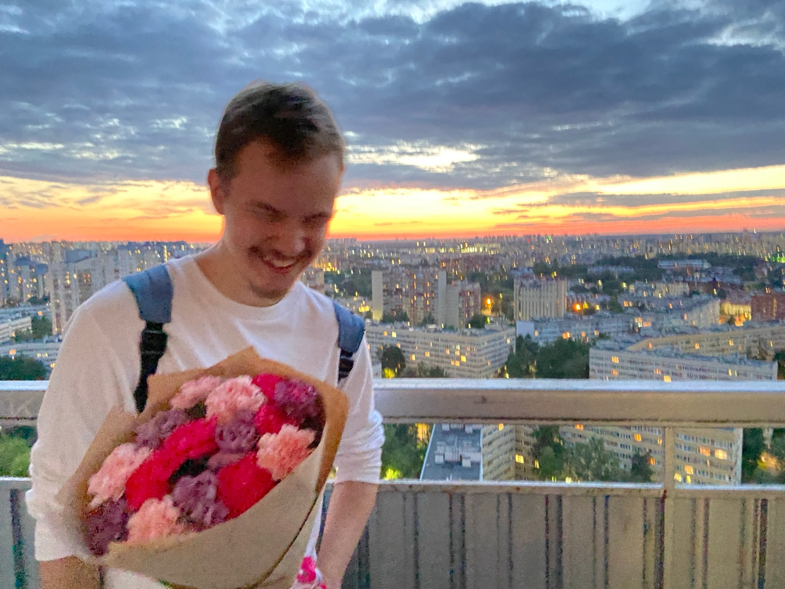
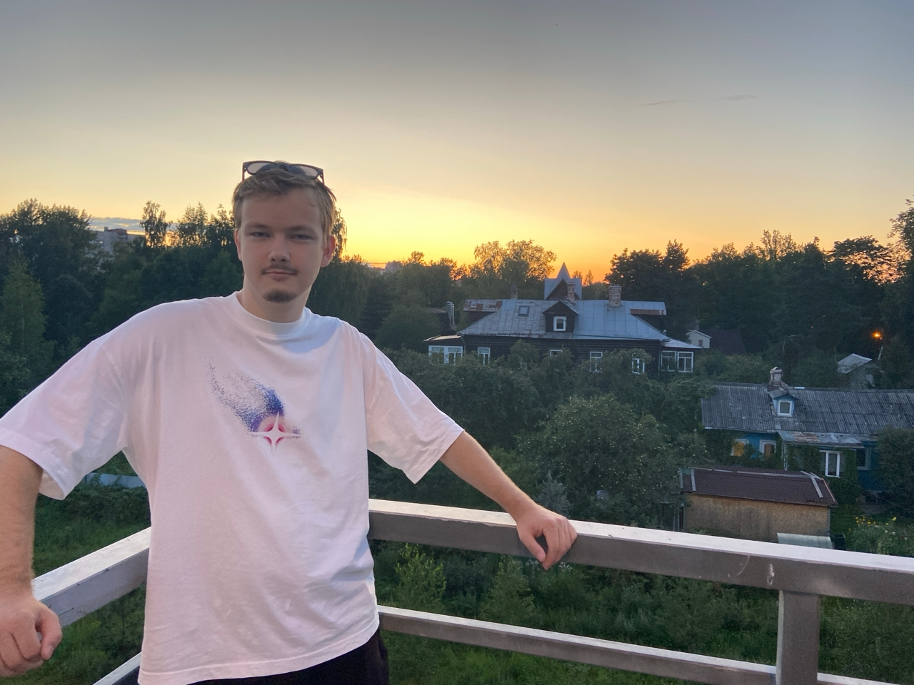
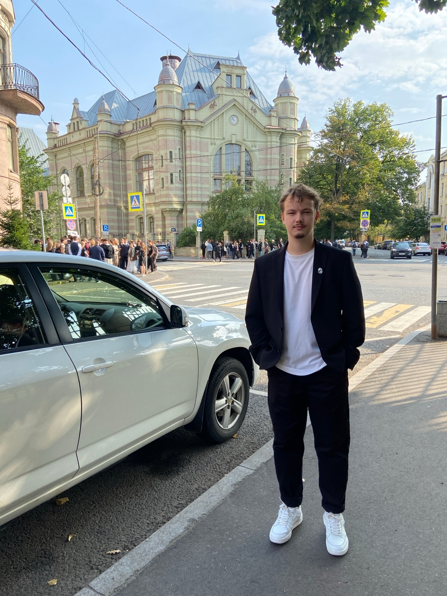

20 лет, казалось бы, как это много, целых 20 лет. Знаю я тебя, хоть косвенно, хоть напрямую, все 13 лет — удивительно. Время идёт, всё меняется, но ты есть, ты всегда есть. От школы, лицея, вуза — ты всё равно живёшь. Тебя многое ломало, тебе было плохо, тебе было нехорошо, но ты в итоге тут, живой.
Нас объединяет куча совместных событий, куча часов на площадке, куча голосовых. Понятно, что я не самый хороший друг, но я рад, что хотя бы в части твоей жизни я был белым пятном, которое приносило радость и стабильность.
Радостно, что за этот промежуток времени ты словно нащупал то, чем бы ты хотел заниматься — режиссура и т.п. А ведь это проявлялось ещё давно, в школе — те же школьные клипы, выступления и т.п.

Ты всегда был тем самым человеком, кто тащил всё на себе, без тебя ничего бы не было. До сих пор я не могу представить старосты лучше, чем ты. В тебе так удачно сошлись качества, необходимые для роли руководителя: ты мог найти язык с любым человеком, донести свои мысли, разрулить любую ситуацию — это удивительно! Таких людей мало — тех, кто может быть руководителем и при этом таким живым и правильным!

Удивительно, но 22-й год, год, когда снимали первый по-настоящему большой фильм, был аж 4 года назад. Тебе было тогда так мало, но уже тогда ты делал столь большие проекты. Столь сложные с точки зрения тимбилдинга, с точки зрения всего — ты брал на себя гору ответственности и всё равно вывозил. Это довольно редкий дар!

Затем был лицей, и так называемый серый кардинал пресс-центра снова был на коне. Казалось бы, брооооо, что ты тут забыл — но ты был основной движущей силой. Вот куда пришёл пресс-центр сейчас? Никуда, скатились лошки, даже учкаст не снимают((((
Было много безумия — те самые ночные похождения по СПб, та самая ночь с цветами.

Затем было поступление, лето, поездка до Лисьего Носа. Так радостно, что есть человек, который может поддержать шизу, которую вкидываешь в рандомный момент — это очень сильно радует!!!!! Да и сам ты способен на безумие. Камон, какой дядя в заброшке с пистолетом. Какая погоня на Достоевской — это безумие, это сумасшедшая тяга к достижению цели несмотря ни на что!
Шёл год, сраное поступление и ЕГЭ. И даже тут ты старался балансировать на грани пропасти. Но в итоге ты тут, в ЛЭТИ — даааа, гадем Стейси. Могло быть лучше, но что есть то есть, хотя бы не Политех, а то дядюшка Малов сделал бы дырку. (Тимофеев — минус вайб, всякий раз вижу его в ЛЭТИ — пугаюсь, минус вайб челик)


Ты не пропадёшь.
Ты никогда не утонешь.
Я не знаю, к чему приведёт тебя жизнь, я не знаю, как всё повернётся, как сложится твоя жизнь, но я знаю одно — ты всегда найдёшь способ выйти из любой ситуации. Оставайся таким, какой ты есть, развивайся туда, где тебе нравится, не забрасывай свои хобби, не трать время на пустых людей, не распыляй свой талант — у тебя всё получится. Нужно просто время.
Надеюсь, что через 10 лет я пришлю тебе новое сообщение. Надеюсь, что через 10 лет мы также встретимся. За тобой, как бы тебе ни казалось, стоит куча людей, кто готов помочь тебе, кто тебя не бросит даже в трудную минуту.
С днём рождения, мой дорогой бородатый друг )))))